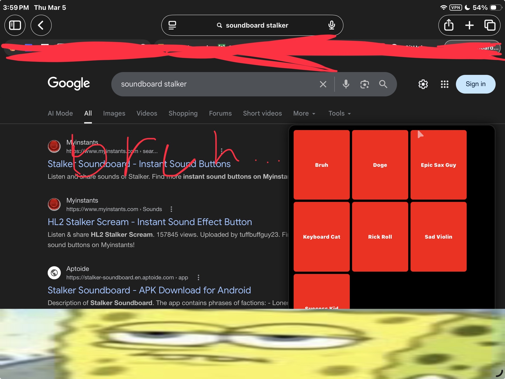

Developed by Ian C. Vu
Added By Ian C. Vu
Verified by Java Boys
Are you on a school device and cant use myinstants for some reason! Well this is the solution for you! Combined with the ultimate stalker, and it is a soundboard, we get SOUNDBOARD STALKER. Hope you enjoy